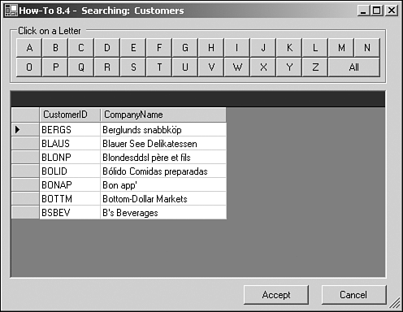

Note
Make a note that this is a techniques chapter. By now, you should be pretty familiar with all the objects and should be seeing new ways to use those objects. |
In this chapter you will
Work with data-bound multi-select list boxes using Windows Forms
Use a single Windows Form to update multiple lookup tables
Create a point-and-click query tool for users using a Windows Form
Make a generic search form in a Visual Basic .NET desktop application
Work with data-bound multi-select list boxes using Web Forms
Use a single Web Form to update multiple lookup tables
Create a point-and-click query tool for users using a Web Form
Make a generic search form in an ASP.NET Web application
Whenever you are working with databases, whether with Visual Basic .NET or other languages, an efficient method of development is to use data-driven techniques.
The term data driven can mean different things. Sometimes people have data-driven applications by having all the options stored in tables and the interface driven from those tables. You can also make an application, or portions of it, be data driven through other methods. Some of the ways are outlined here in this chapter, along with this first one, which discusses using multi-select list boxes in Visual Basic .NET.
One of the benefits of using data-driven techniques is that you usually end up with the smaller code base, especially if you use the technique for more than one task. An example of this is the search form example in How-To 8.4 (for Windows Forms) and How-To 8.8 for the Web Form version. You can see the Windows Form version of this technique used with the Customers table in Northwind in Figure 8.1.

As with other data-driven techniques, although this form is shown being used with the Customers table, with just four lines of code-setting custom properties on this form, you can use it with just about any other tables, such as Suppliers. The more you use a specific technique in your application, such as this search form, the bigger benefit you receive in terms of number of lines of code and objects that are added to the application.
Note
Make a note that this is a techniques chapter. By now, you should be pretty familiar with all the objects and should be seeing new ways to use those objects. |
Note
The solution for this chapter has been broken up into two projects, a Visual Basic .NET project called VB.NET -Chapter 8, which covers How-Tos 8.1-8.4. The rest of the How-Tos in this chapter are in an ASP.NET project called VBNetHowToChap8Web. As with the code, this chapter could be started in two different chapters, depending on whether you wanted to use the techniques for Visual Basic .NET or ASP.NET. If you want the desktop solutions, start with How-To 8.1; for the Web, you can start with How-To 8.5. |
Note
This chapter is split up to cover data-driven techniques using both Windows Forms and Web Forms. These techniques are useful in both areas. In addition, they are different enough in the way they are coded that they warranted separate How-Tos for each technique and environment. |